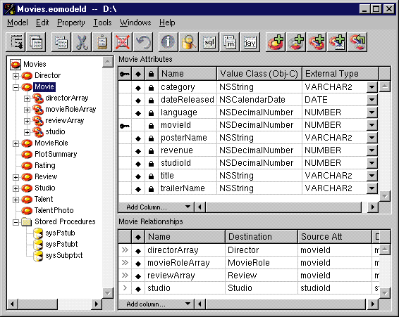
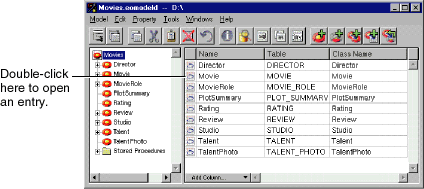
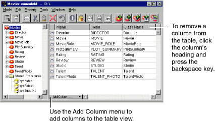
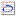

Table of Contents
Table of Contents  Next Section
Table of Contents
Next Section
Table of Contents  Previous Section
Previous Section
When an entity is selected, the display changes to show two tables: one for the entity's attributes and one for the entity's relationships (shown in Figure 14).

Figure 14. Displaying an Entity's Attributes and Relationships

Figure 15. Navigating from the Table View

The Open Entity Icon
When the model is selected in the tree view and the table is displaying the model's entities, the Model Editor displays an  icon to the left each entity in the table. Double-clicking this icon opens that entity, selecting that entity and displaying its attributes and relationships in the table. You can accomplish the same thing by selecting the entity in the tree view. Adding Columns with the Add Column Menu
You use the Add Column menu to add columns to the table view. The items in the menu depend on what modeling component the table is displaying and on what columns the table contains. As you add columns to the table, the corresponding menu items are removed from the Add Column menu.
Table of Contents Next Section